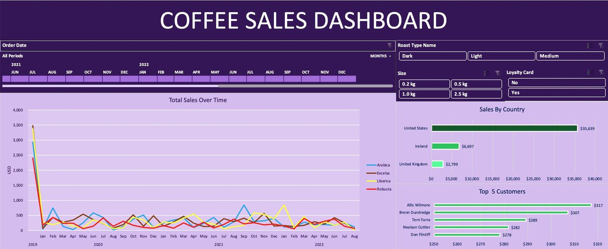

Data Analytics
Projects I built end to end
Raw data in, business decision out — including the parts most portfolios skip: cleaning, validation, and being upfront about what the data can't tell you.
Project 01 · Python · Power BI · Machine Learning
Eco-Brick Market Intelligence
Where should someone build a new eco-brick factory in Telangana, and which existing plants are most likely to close? I scraped, cleaned and analysed 355 brick manufacturers across 31 districts to answer it properly rather than guess.
0MANUFACTURERS ANALYSED
0DISTRICTS COVERED
0ANALYSIS PHASES
0COLUMNS IN FINAL DATASET
The four questions I set out to answer
- Where is the Telangana brick market heading — traditional clay, or eco?
- Which districts are underserved by modern eco-brick supply?
- Where should a new fully-automatic fly ash brick factory actually be built?
- Which existing factories are at highest risk of closure?
What the data said
- 85.4% operational rate — a healthy, active market, not a declining one
- 65.9% fly ash adoption — the eco transition is underway but nowhere near finished
- 55% still hand-made — a modernisation gap this large is a competitive opportunity, not a problem
- Only 13.2% have a website — digital presence is an almost uncontested moat in this sector
- Ranga Reddy ranked #1 for a new plant — largest household base, and it held first place across every sensitivity scenario I tested, not just my preferred weighting
- Kamareddy — one hand-made clay competitor, zero modern competition, zero eco adoption. The clearest gap in the state
- Company size predicts closure better than machine type — the opposite of what I expected going in
How I built it — ten phases
- Cleaning: 361 → 355 rows. Dropped 6 duplicate factories caused by border-district scrape overlap, dropped a column that was 96.6% missing, and converted website/contact into boolean flags because their absence is itself a market signal
- Feature engineering: 5 derived columns including modernisation score, size score and a high-risk flag
- Market gap detection: used households rather than raw population as the denominator — households are the actual buyers of bricks
- Location strategy: weighted scoring model — demand 25%, competition 20% — plus a raw-material bonus for districts with a verifiable geographic advantage
- Competitor intelligence: four-tier segmentation of the whole market
- Closure-risk model: Random Forest with stratified cross-validation, scored on recall rather than accuracy — with only 52 closed examples, catching a closure matters more than looking good on paper
- Delivery: a 3-page Power BI dashboard and 7 written insights, each structured fact → interpretation → recommendation
What I was honest about
- The source is a Google Maps scrape, so there is coverage bias toward listed businesses
- It is a point-in-time snapshot with no longitudinal data
- Company size and type are self-reported and unverified
- 52 closure examples is a small base — so I framed the model as risk profiling, not forecasting, and said so in the report rather than letting someone act on it as a prediction
I also kept a written decisions log explaining why each judgement call was made. If someone disagrees with a choice, they can see the reasoning and argue with it — which I think matters more than the model itself.
The analysis, in four charts
Where should the factory go?
Weighted location model — composite score across all 31 districts, top 10 shown. Criteria: demand 25%, competition 20%, modernisation gap, eco gap, market stability, raw-material access.
Ranga Reddy held first place in every sensitivity scenario I tested, not just my preferred weighting.
What actually predicts factory closure?
Random Forest feature importance, trained on the full 355-row dataset.
I went in assuming machine type would dominate. Company size beat it, and I reported that rather than re-running until the data agreed with me.
The state of the Telangana brick market
355 manufacturers, 31 districts, scraped and cleaned from raw.
Operational · healthy, active market
85.4%
Fly ash (eco) · transition underway
65.9%
Still hand-made · modernisation gap
55.0%
Have a website · uncontested moat
13.2%
Only 13.2% have any web presence. In a sector this size that is an almost uncontested advantage for whoever moves first.
How the closure-risk model actually performed
Random Forest, 5-fold stratified cross-validation. Recall highlighted because it is the metric I optimised for.
Precision is 0.314 — weak, and I am showing it anyway. With only 52 closures in the data this is risk profiling, not forecasting, and I said so in the report.
PythonPandasNumPyscikit-learnRandom ForestPower BIJupyterGitFeature engineeringData validation
View repository ↗
Project 02 · Advanced Excel
Coffee Sales Dashboard
Three messy source tables — Orders, Customers and Products — turned into one clean master sheet and an interactive dashboard on top of it. Built end to end from raw data to finished UI.
Data preparation
- XLOOKUP to merge customer and product data into the orders table
- INDEX MATCH for dynamic product detail retrieval
- IF functions to expand abbreviations into readable values (ROB → Robusta), so the dashboard reads properly to a non-analyst
- Duplicate removal and data cleaning across all three sources
- Custom date formats, USD currency and metric size units applied consistently
- A named Excel Table so pivots auto-expand on refresh instead of silently missing new rows
The dashboard
- 3 Pivot Table-driven charts — sales over time, sales by country, and top 5 customers
- A timeline slicer plus Roast Type, Size and Loyalty Card slicers
- Every slicer connected to every chart simultaneously, so the whole view filters together
- Clean dashboard UI — gridlines, headers and formula bar stripped out so it reads as a product, not a spreadsheet
The dashboard, rebuilt live
Same numbers as the Excel file, drawn in the browser so you can interact with them.
Sales by country
Total revenue split across the three markets in the dataset.
The United States is 79.0% of all revenue. Any growth decision starts there.
Revenue share
The same three markets as a proportion of total revenue.
United States79.0%$35,639
Ireland14.8%$6,697
United Kingdom6.2%$2,799
Nearly four fifths of revenue sits in one market. That is a concentration risk as much as a strength.
Top 5 customers by spend
Identified with a Pivot Table over the merged master sheet.
The top five sit within $39 of each other — no single customer the business depends on.

The finished dashboardThree messy tables in, one interactive view out. Timeline plus Roast Type, Size and Loyalty Card slicers, all connected to all three charts — change one filter and the whole view moves together
ExcelXLOOKUPINDEX MATCHPivot TablesSlicersData cleaningDashboard design
View repository ↗